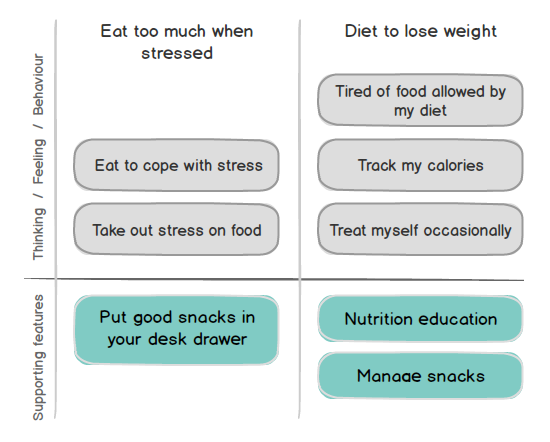
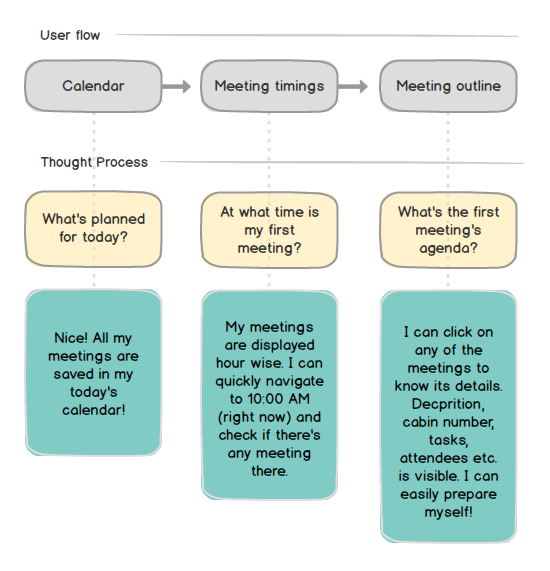
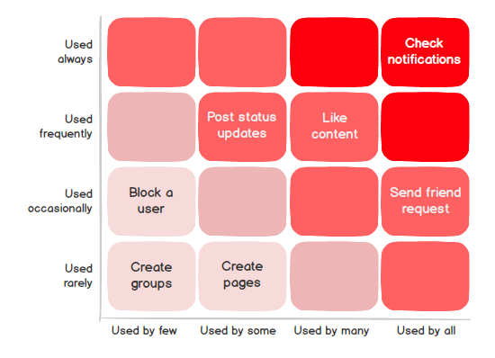

It is WIP. Because the world is always on.
Scale of your project? Painpoints? User feedback? Available budget? Resources? Uncomfortable dealines? Well, it all depends. The UX process that we will adopt for your next big thing will depend upon various factors and situations. And yes, it will be revisted and evolved over time. However, with my experience, following are the techniques I use at the core:
Analysis
-
Competitive Analysis
Starbucks and Dunkin' Donuts are direct competitors, while the prepared foods section of the local super market could be an indirect competitor to both of them - especially if its coffee is good.
- Prioritize key competitors and emerging competitors
- Understand strenghts and weaknesses of the competitors
- Find out key brand differentiators
- Review economic environment (what's your users' purchasing power?)
-
Mental Model
Having a solid, data-driven 'I-didn't-make-it-up' roadmap is inavitable for making design choices.
- Understand users deeply
- So deeply that you could live their lives, walk in their shoes and make decisions exactly like they would
-
Task Analysis
Identify user's thought process and desired reactions towards a particular taskflow segment.
 -
Red Route Analysis
Consider all the critical and frequent user activities (read goals) on your app. Give these activities all the importance needed and earn healty bread and butter!

Defining crisp red routes for your users is like allowing them to travel from Point A to Point B without any obstacles. -
Storyboards

- Storyboarding is about visually depicting problems, solutions and benefits.
- Very handy while explaining a scenario to stakeholders or while discussing about a problem solving feature.
- It should capture user's fears, motivations and reactions within a context.
- I use Bitstrip to create presentable storyboards.